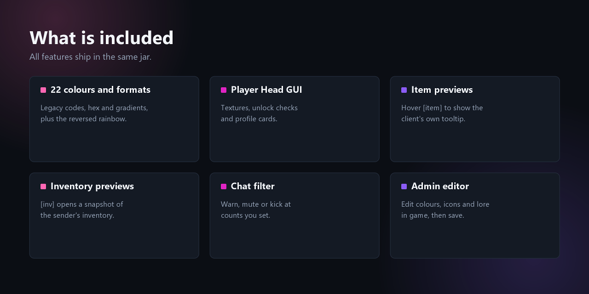
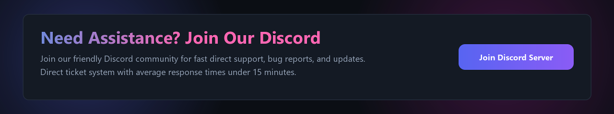

LuxChatColor
Next-generation chat colors, interactive item previews, and automated chat moderation built for modern Paper servers.
Overview
LuxChatColor is designed as an all-in-one chat customization solution. Rather than installing separate plugins for chat colors, item previews, inventory previews, and swearing filters, LuxChatColor provides all four under a single, unified, asynchronous framework.
Installation
- Download
LuxChatColor-1.2.0.jar. - Place the jar into your server's
plugins/folder. - Restart your server to generate the configuration files.
- Configure permissions for your ranks using LuckPerms or your permission provider.
Commands & Aliases
Comprehensive command suite with tab-completion support for both players and administrators:

| Command | Aliases | Permission | Description |
|---|---|---|---|
/chatcolors |
/color, /colors |
luxchatcolor.use | Opens the color picker menu. |
/chatcolors <name> |
/color <name> |
luxchatcolor.color.<name> | Applies a specific color directly by name. |
/chatcolors none |
/color reset |
luxchatcolor.use | Removes active chat color and resets to default white. |
[item] |
/item |
luxchatcolor.preview.item | Displays held item with interactive client tooltip. |
[inv] |
/inv |
luxchatcolor.preview.inventory | Posts a secure, clickable snapshot link to your inventory. |
/lccadmin gui |
/luxchatcoloradmin gui |
luxchatcolor.admin | Opens the in-game visual editor. |
/lccadmin reload |
/luxchatcoloradmin reload |
luxchatcolor.admin | Reloads config.yml and moderation filters. |
Permissions
| Permission Node | Default | Description |
|---|---|---|
luxchatcolor.use |
Everyone (true) | Allows players to run /chatcolors. |
luxchatcolor.color.* |
OP | Grants access to all 22+ colors and gradients. |
luxchatcolor.color.<id> |
OP | Grants access to a specific color (e.g. luxchatcolor.color.crimson). |
luxchatcolor.preview.item |
Everyone (true) | Allows players to type [item] in chat. |
luxchatcolor.preview.inventory |
Everyone (true) | Allows players to type [inv] in chat. |
luxchatcolor.filter.bypass |
OP | Bypasses swearing and anti-spam chat filters. |
luxchatcolor.admin |
OP | Grants access to administrator commands. |
Configuration
The main configuration file is located at plugins/LuxChatColor/config.yml:
# Chat Preview Settings
previews:
item:
enabled: true
token: "[item]"
cooldown-seconds: 5
inventory:
enabled: true
token: "[inv]"
expiry-seconds: 60
show-ender-chest: false
# Automated Moderation Settings
moderation:
enabled: true
escalation:
warning-violations: 3
mute-violations: 6
mute-duration-minutes: 15
kick-violations: 9Color Selection GUI
Executing /chatcolors opens a 54-slot visual menu populated by textured player skulls. Each skull corresponds to a distinct color, hex palette, or MiniMessage gradient.

- Live Permission State: Unlocked colors display a green checkmark and an active name preview. Locked colors show a red mark with the exact permission required.
- Profile Card: Located at the bottom center (slot 49), rendered with the player's personal Minecraft skin. Displays total unlocked colors and active style.
- Click to Toggle: Clicking your active color unselects it, restoring default white chat.
Item & Inventory Previews
Item Tooltip Previews ([item])
Typing [item] in chat replaces the placeholder with the localized name and stack count of the item held in your main hand. Hovering over the message in chat renders the client's native tooltip, displaying custom names, enchants, lore, and NBT data.
Inventory Snapshot Previews ([inv])
Typing [inv] generates a clickable link in chat. Clicking opens a read-only GUI showing the sender's main inventory, armor slots, and offhand item at the time of sending.
Chat Moderation
LuxChatColor includes a built-in rule engine located under plugins/LuxChatColor/filters/.
- Regex & Blacklists: Block, mask, or alert staff when prohibited words are detected.
- Violation Escalation:
- 3 Violations: Automated formal warning message sent to the player.
- 6 Violations: Automated 15-minute mute applied across the server.
- 9 Violations: Automated kick from the server.
In-Game Editor
Server administrators with luxchatcolor.admin can execute /lccadmin gui to open the in-game editor. From this interface, you can adjust names, permissions, slots, and wrappers without opening YAML files.
Support & Discord
Need assistance, feature requests, or encountered an issue? Our team is available on Discord with average ticket response times under 15 minutes.

Releases & History
- Separated rank prefix coloring into the dedicated sister plugin (
LuxCustomRank). - Added null check in
ColorRegistry.iconNameOf()resolving NPE when unselecting colors. - Enhanced
[inv]snapshot performance under high chat loads. - Added support for modern Paper 1.21.x Adventure component serializers.
- Added in-game visual editor (
/lccadmin gui). - Introduced regex rule matcher with violation escalation ladders.
- Added 8 new multi-stop gradient color presets.

LuxCustomRank
Self-service rank colors, custom donor titles, and personal prefix management powered by LuckPerms user meta.
Overview
LuxCustomRank allows players, donors, and VIPs to change their prefix color through an interactive player-head menu or define a unique custom title with /customrank—without affecting anyone else in the group.
LuckPerms Integration
Most custom prefix plugins incorrectly alter group-level settings or inject fragile prefix chat formatting. LuxCustomRank hooks directly into the LuckPerms API to apply a scoped PrefixNode to the individual User object.
100 (configurable in config.yml). Because group ranks typically run at weights 10 through 50, the player's custom selection cleanly overrides their group prefix. When cleared via /rankclear, the user node is removed and the player automatically reverts to their default group prefix.
Installation
- Verify that LuckPerms is installed and working on your server.
- Download
LuxCustomRank-1.0.0.jar. - Place the jar into your server's
plugins/folder. - Start or restart your server.
- Grant appropriate permissions (e.g.
luxcustomrank.color,luxcustomrank.prefix) to your donor groups.
Commands & Aliases
All rank customization commands provide full tab-completion and permission checks:

| Command | Aliases | Permission | Description |
|---|---|---|---|
/rankcolor |
/rc, /rankcolors, /prefixcolor |
luxcustomrank.color | Opens the rank color head selection GUI. |
/customrank <title> |
/customprefix, /setrank, /myrank |
luxcustomrank.prefix | Sets a custom personal prefix/title. |
/rankclear |
/resetrank, /resetprefix |
luxcustomrank.clear | Clears your custom prefix and reverts to group rank. |
/luxcustomrankadmin reload |
/lcra reload |
luxcustomrank.admin | Reloads config.yml and color heads. |
Permissions
| Permission Node | Default | Description |
|---|---|---|
luxcustomrank.use |
Everyone (true) | Base permission for plugin usage. |
luxcustomrank.color |
OP | Allows players to run /rankcolor. |
luxcustomrank.prefix |
OP | Allows players to set titles with /customrank. |
luxcustomrank.clear |
Everyone (true) | Allows players to reset their rank via /rankclear. |
luxcustomrank.color.* |
OP | Access to all rank colors in the GUI. |
luxcustomrank.color.<name> |
OP | Access to a specific rank color (e.g. luxcustomrank.color.gold). |
luxcustomrank.admin |
OP | Access to administrator reload commands. |
Configuration
The configuration file is located at plugins/LuxCustomRank/config.yml:
prefix:
# Minimum and maximum character bounds
min-length: 2
max-length: 16
# LuckPerms User Meta weight
weight: 100
# Blacklisted words (case-insensitive)
banned-words:
- "admin"
- "owner"
- "staff"
- "mod"
gui:
title: "<dark_gray>Pick your Rank Colour"
size: 36
filler: "GRAY_STAINED_GLASS_PANE"
reset-slot: 31Rank Color GUI
Executing /rankcolor opens a 36-slot GUI featuring custom-skinned player heads.

- Instant LuckPerms Update: Clicking an unlocked color updates the player's prefix node immediately.
- Reset Button (Slot 31): A barrier button lets players reset their custom prefix without running commands.
Custom Titles & Prefixes
Players with luxcustomrank.prefix can run /customrank <title> to set their own prefix text.
/customrank &b[VIP] or /customrank &e[WARRIOR]).
Anti-Abuse Filter
To protect your server's staff hierarchy and prevent inappropriate names, LuxCustomRank validates every custom prefix:
- Character Bounds: Rejects prefixes shorter than
min-length(default: 2) or longer thanmax-length(default: 16). - Word Blacklist: Automatically checks entries against
banned-wordsinconfig.yml.
Support & Discord
Need help configuring LuckPerms weights or setting up custom heads? Join our official community server for rapid assistance.

Releases & History
- Initial public release of LuxCustomRank.
- Direct LuckPerms User Meta PrefixNode integration.
- Interactive 36-slot head color picker GUI.
- Configurable anti-abuse length bounds and banned word checks.